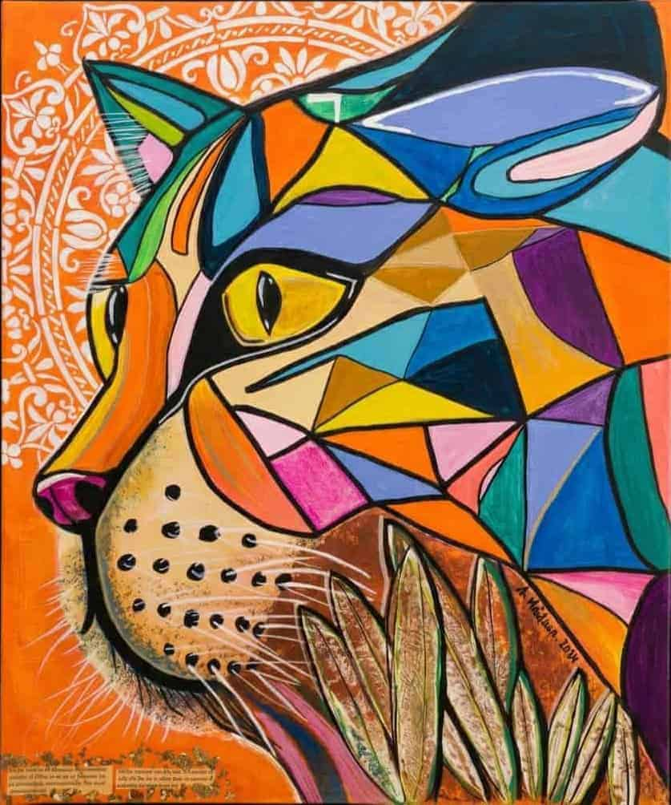

N° 04 · Collection 2024 · Chat Totémique
Le Guetteur Silencieux 2024
Acrylique, dorures et collage sur toile · 2024
Un chat en profil altier, œil d'or en amande, se détache sur un fond de mandala blanc et orange brûlé. Sa robe est découpée en facettes de vitrail — bleu électrique, vert profond, mauve et or — rehaussées de vraies dorures et d'éléments de collage. Gardien silencieux, guide et passeur d'énergie dans la tradition chamanique, il observe sans juger et protège l'espace où il est accroché. Une présence forte, apaisante et indéfinissable — l'œuvre qui transforme un mur en sanctuaire.
Format50 × 60 cm
TechniqueAcrylique, dorures, collage
Date2024
ÉditionŒuvre unique originale
CertificatCertificat d'authenticité inclus
Disponible
240
€
TTC
Certificat d'authenticité inclus